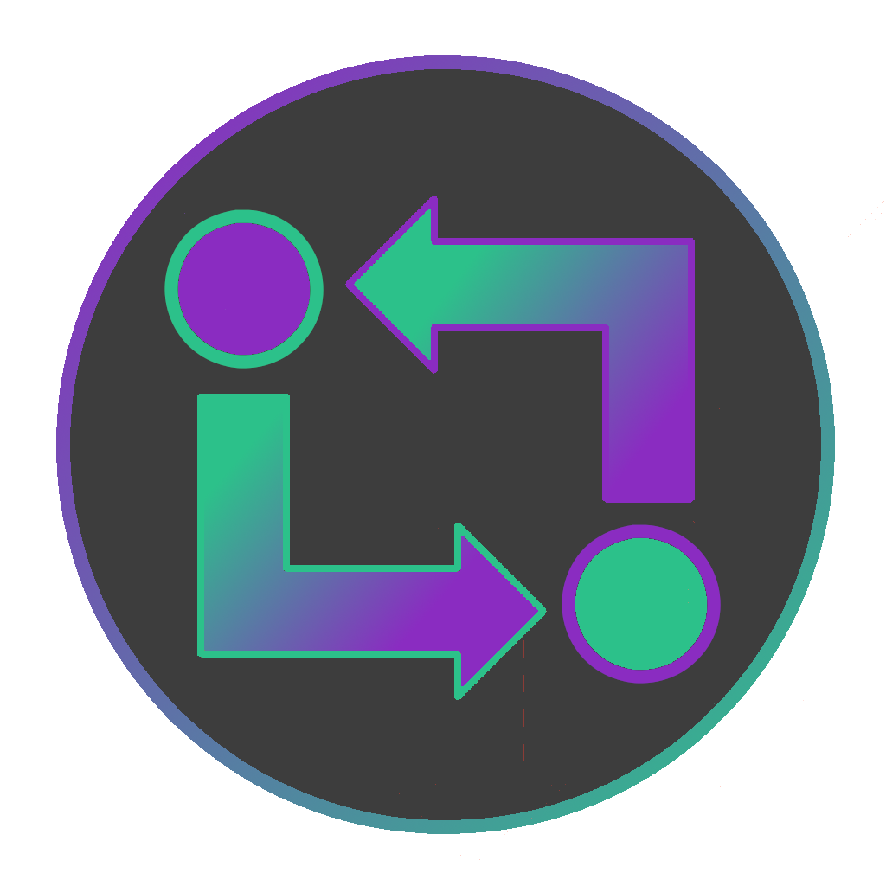
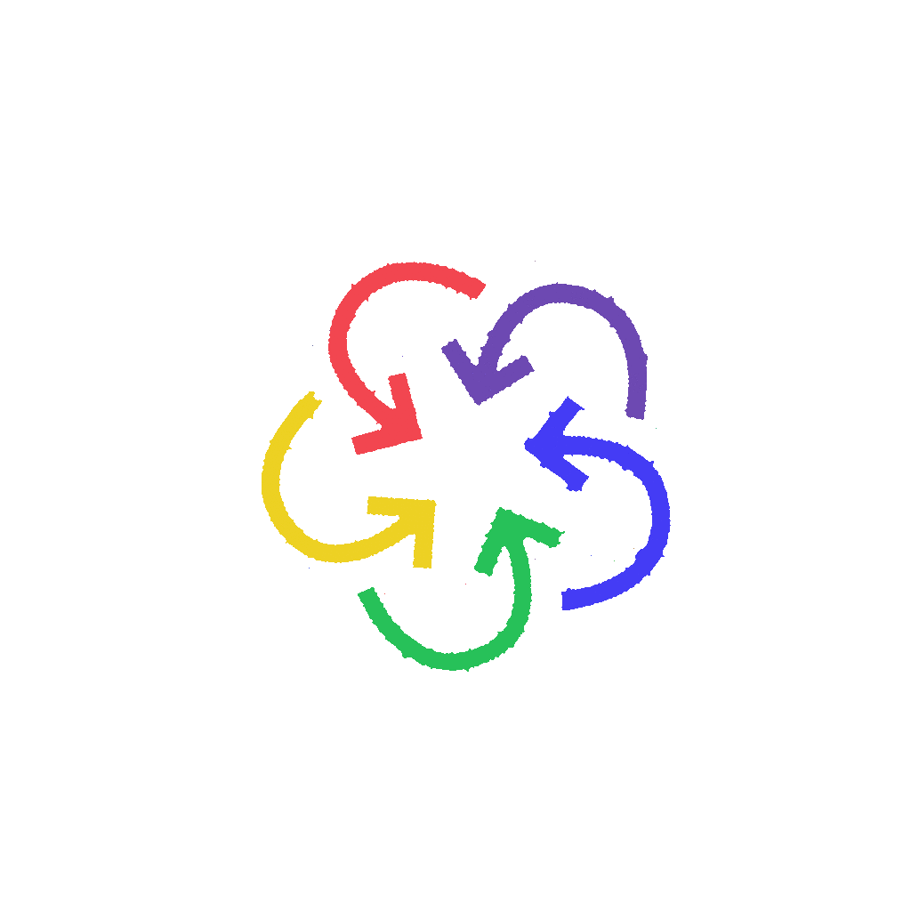

  <div class="splash" *ngIf="showSplash" >
  <div class="spin">
    
  </div>
  
</div>
<ion-app>
  
  
  <ion-split-pane *ngIf="!showSplash" contentId="main-content" >
    <ion-menu *ngIf="!enLogin" contentId="main-content" type="overlay">
      <ion-content>
        <ion-list id="inbox-list">
          <ion-list-header>ECDT</ion-list-header>
          <ion-note></ion-note>

          <ion-menu-toggle auto-hide="false" *ngFor="let p of appPages; let i = index">
            <ion-item routerDirection="root" [routerLink]="[p.url]" lines="none" detail="false" routerLinkActive="selected">
              <ion-icon [color]="p.color" slot="start" [ios]="p.icon + '-outline'" [md]="p.icon + '-sharp'"></ion-icon>
              <ion-label>{{ p.title }}</ion-label>
            </ion-item>
          </ion-menu-toggle>
        </ion-list>

        <ion-list id="labels-list">
          <ion-list-header>Labels</ion-list-header>

          <ion-item *ngFor="let label of labels" lines="none">
            <ion-icon slot="start" ios="bookmark-outline" md="bookmark-sharp"></ion-icon>
            <ion-label>{{ label }}</ion-label>
          </ion-item>
          <ion-item routerDirection="root" (click)="logout()" lines="none" detail="false" >
            <ion-icon color="danger" slot="start" ios="log-out-outline" md="log-out-sharp"></ion-icon>
            <ion-label>Desconectar</ion-label>
          </ion-item>
        </ion-list>
      </ion-content>
    </ion-menu>
    <ion-router-outlet id="main-content"></ion-router-outlet>
  </ion-split-pane>
</ion-app>
